Case Study 1: Lending Club Platform
In this case study we analyse the data about loan given to applicants.
I analysed the dataset, did some visualizations, data cleaning and briefly
applied machine learning algorithms to predict the interest rate based
on several parameters.
Dataset analysis
-
There are 10,000 rows in the dataset with 55 columns in it.
-
45 columns do not have any missing values, while 10 columns have missing values ranging from 10-85%
-
I broke down the dataset into two categories, numerical and categorical and analysed the same.
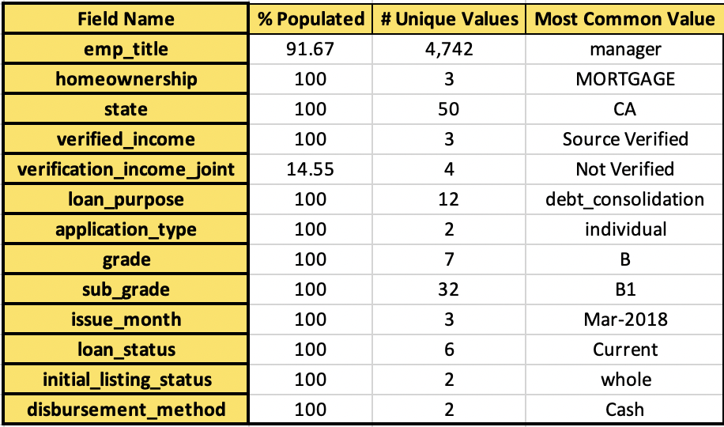
This table shows the categorical variables, %populated values, number of unique values and the most common value.
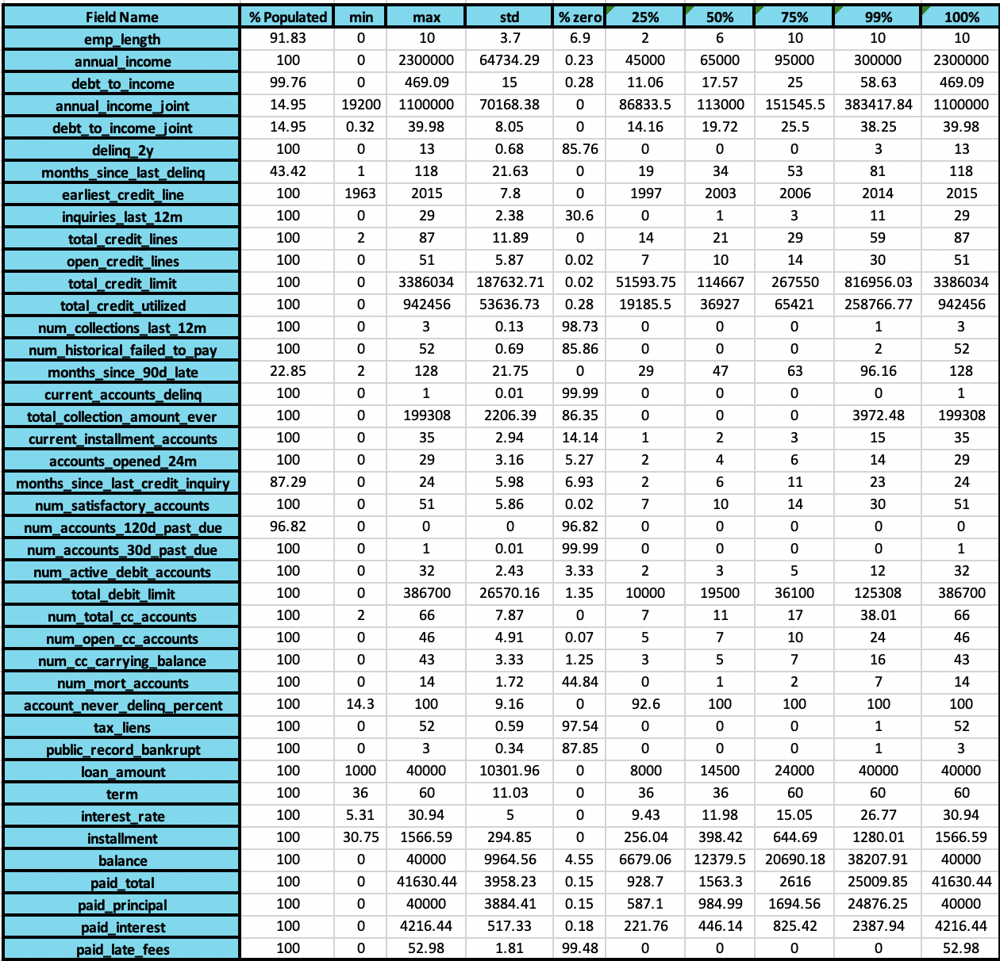
This table shows the numerical variables, %populated values, minimum, maximum, mean, std deviation,
%zero, 25 percentile, 50 percentile, 75 percentile, 99 percentile and the 100 percentile values. This helps
to find the outliers as well.
Issues with data:
- As mentioned, 10 columns are with missing values.
- For missing value imputations, I would need to sit with expert to find out what does missing values mean.
- Also, for predicting interest rate, there are several column values which are not required. For example,
installments, paid principle, which is information after approving loan, and thus cannot be used for machine learning.
- Lastly, given the number of columns, we need more data points to cover all the possible cases. Just 10,000 rows is too less.
Visualizations
-
I performed bivariate analysis, to find any patterns in interest rate with other fields.
-
Following were the most important graphs I came up with:
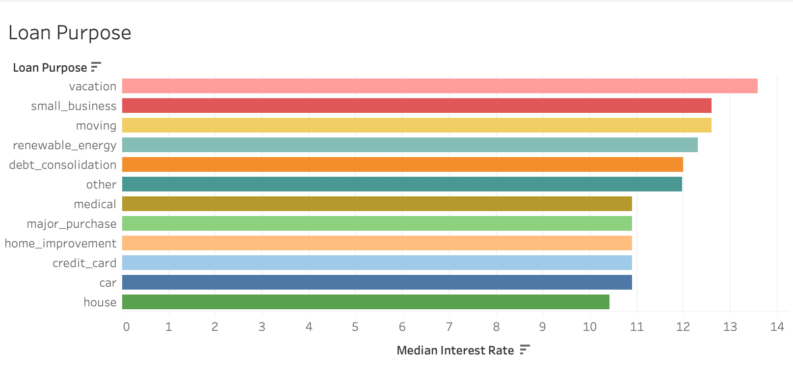
The first graph shows the median interest rate offered depending on purpose of loan. The graph corroborated the inuition that interest rate varies dependiing on type of loan.
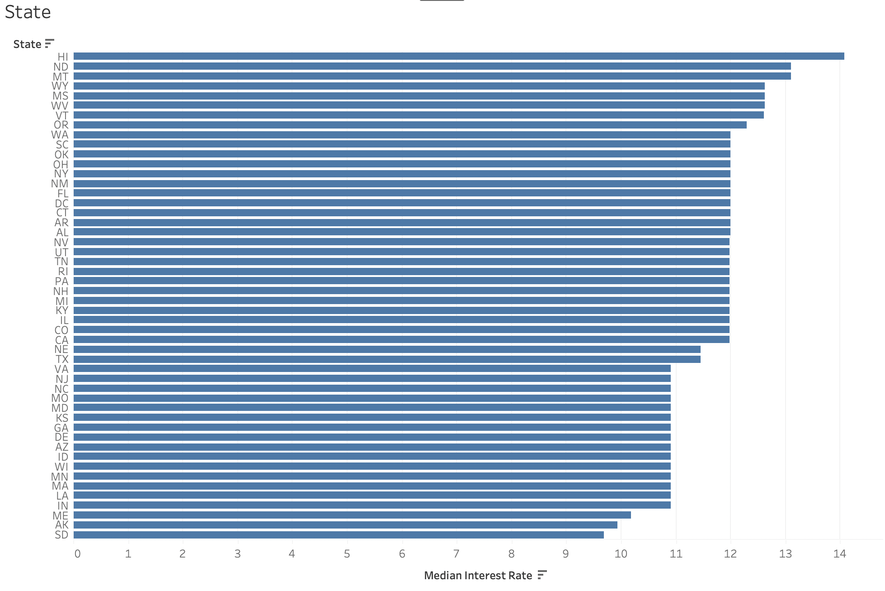
Here I found that the interest rate varies depends on the type of state you are living in.
Later I grouped the states together based on this visualization to handle categorical
variables.
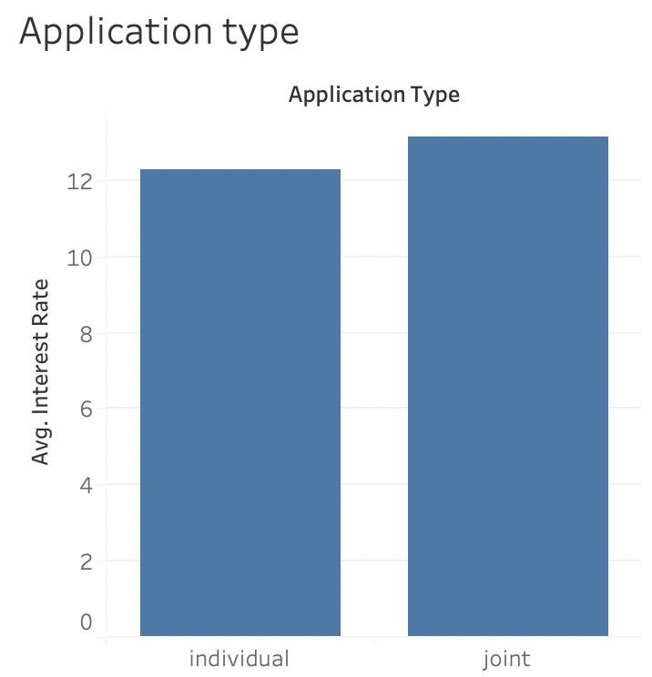
The type of applicant has an impact too, where joint applicants interest rates are higher.
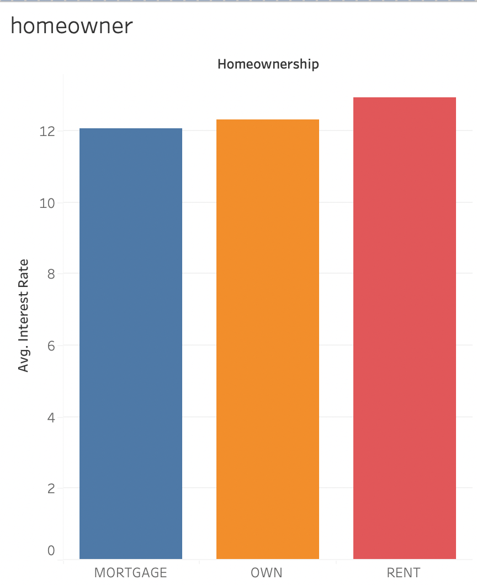
Applicant with mortgaged house gets lowest interest rate, while those on rent are riskier applicants.
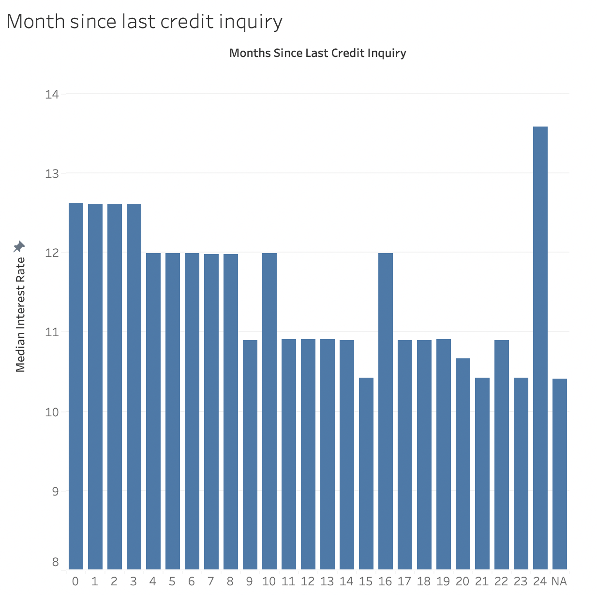
While searching for this project, I came to know that number of inquiries made about credit is crucial to find the interest rate offered. We find the similar pattern in this data as well.
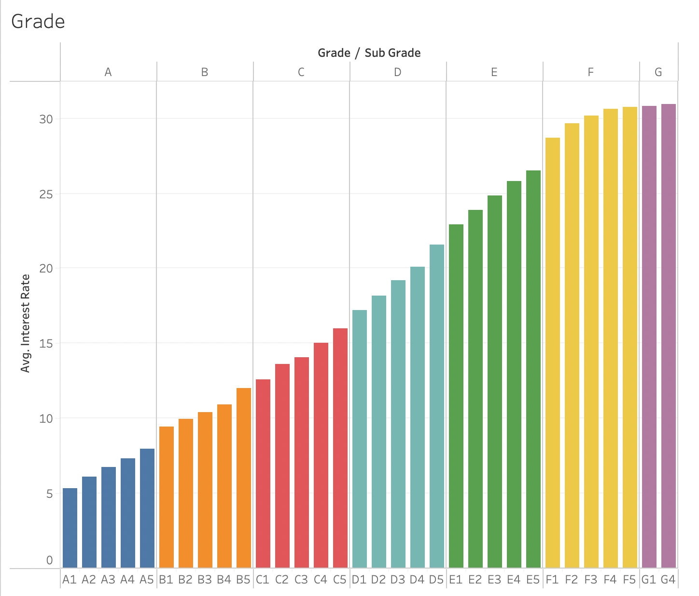
Again, while researching I came to know that the assigned grade is a crucial factor in assigning interest rate which is present in our data as well.
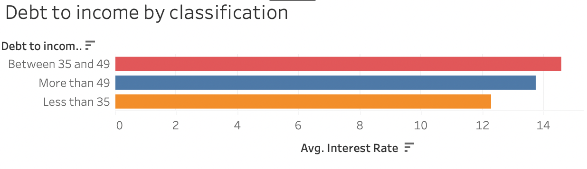
I classified the debt to income into 3 categories, less than 35, between 35 and 49 and more than 49 and then analysed the average interest rate. The class in which the applicant belongs to is crucial to predict the rate of interest.
Data Cleaning and Feature Engineering
-
I dropped fields which I think are not relevant to predict interest rate, also some fields
where a large amount of data is missing. Following columns were removed:
'issue_month',
'loan_status', 'initial_listing_status', 'disbursement_method',
'balance', 'paid_total', 'paid_principal', 'paid_interest',
'paid_late_fees', 'emp_title', 'emp_length', 'months_since_90d_late', 'months_since_last_delinq'
, 'verification_income_joint', 'debt_to_income_joint', 'num_accounts_120d_past_due', 'term' and 'installment'.
-
Annual Income: I saw that, there were different values for annual_income and annual_income_joint. Only 1400 values were available in annual_income_joint, thus I took the maximum of annual income and annual income joint values. This is under assumption, that annual income represents the first applicant's income, while annual income joint shows the combined income of all applicants.
-
Debt to income: I filled the missing values with the median value of dataset.
-
Months since last credit inquiry: Based on above visualization, I categorized this field into 4 categories, 'less than 3','between 4 and 8','between 9 and 19' and 'greater than 19' to better handle this field.
-
State: I divided the state into 6 categories, based on median interest rate offered in various states. This helped me to reduce the cardinality of state column and handle data better.
-
Handling categorical variables (Target encoding): I encoded categorical variables using target encoding to convert text into numbers for ML algorithms.
-
Feature Selection: I used forward feature selection to predict top features for our model, using root mean squared error as the scoring method.
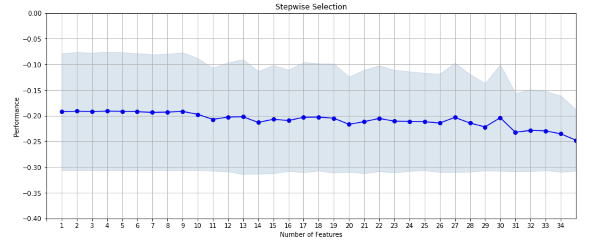
- Top 9 features: Based on above method we selected following 9 variables for our machine learning method:
-
num_collections_last_12m
-
num_historical_failed_to_pay
-
current_accounts_delinq
-
num_accounts_30d_past_due
-
tax_liens
-
public_record_bankrupt
-
grade_encoded
-
sub_grade_encoded
-
application_type_encoded
Apply Machine Learning Algorithms:
1: Linear Regression
-
I used root mean squared error as the metric for our model. Using sckit learn package, I trained my model to predict interest rate on unseen data. (I split the data into 80:20 ratio).
-
For linear regression, we got RMSE value of 0.07, which according to me is a very low value.
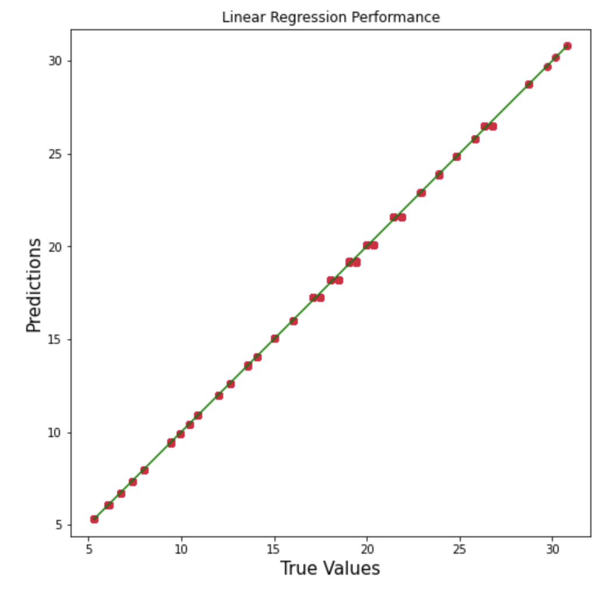
2: Random Forest Regressor
-
I tried to non linear model to predict the interest rate, which generated similar kind of output with RMSE value of 0.078.
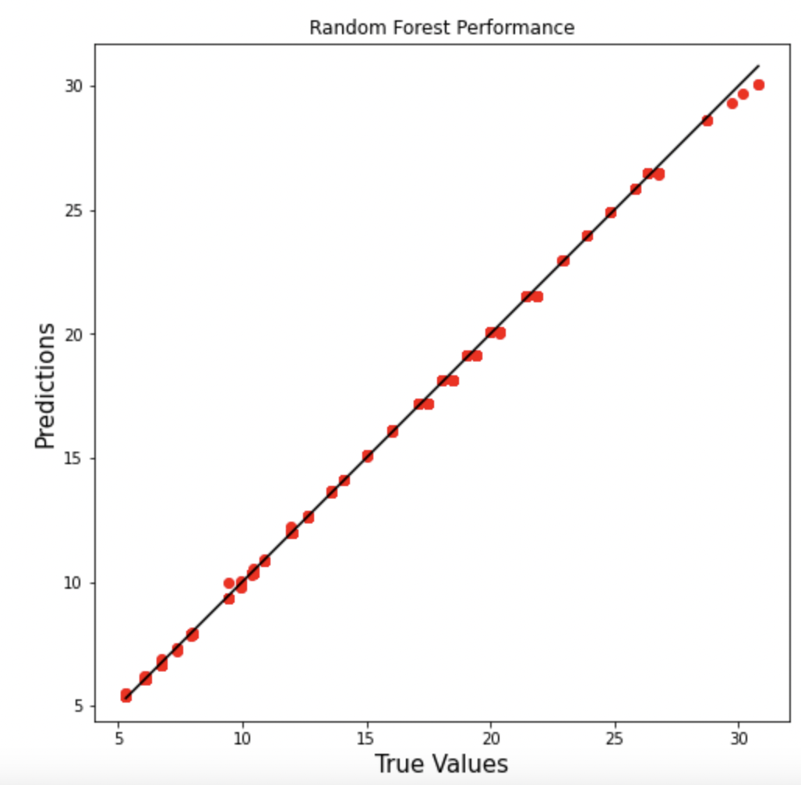
3: Support Vector Regressor
-
This model did not perform so well as compared to other models I used.
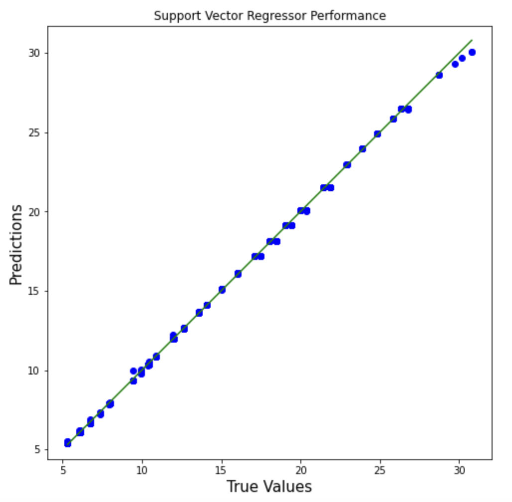
-
I observed that for high interest rate cases, this model did not perform so well.
Summary:
-
If I had more time, I would play around with hyperparameter tuning of different algorithms.
-
Secondly, as mentioned before, more data points would help us cover more test cases and avoid sparser datasets.
-
Thirdly, I would love to check the model again as the prediction is very good, and too good prediction can be caused due to several reasons.
-
Fourthly, I assumed that grade and sub grade is assigned before interest rate determination. If not, I would remove these two fields from prediction
because they are leading to very good prediction.
-
For missing values, I would like to sit with an expert and find out what does missing values mean and ways to handle it.
-
Also, I dropped around 15 columns, assuming that these columns are determined after the loan is given thus not useful in predicting interest rate.
- Lastly, I would like to play around with different models for wrapping techniques and also use cross validation method for hyperparameter tuning.